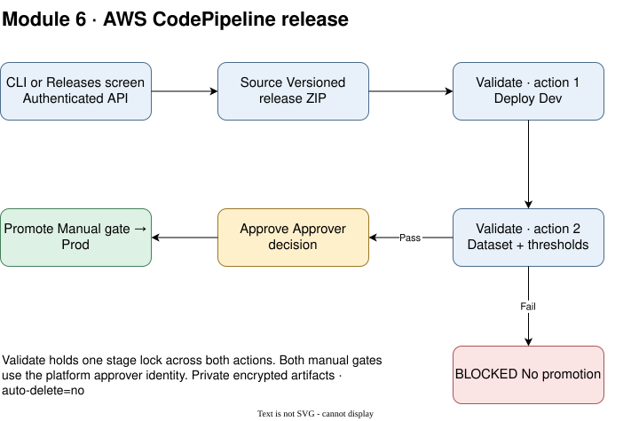
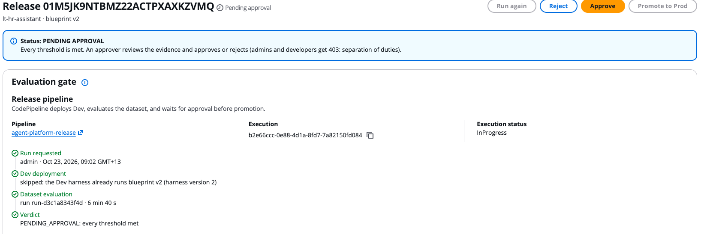
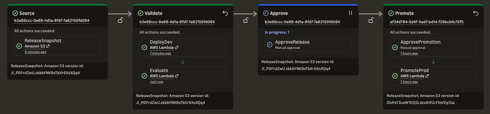
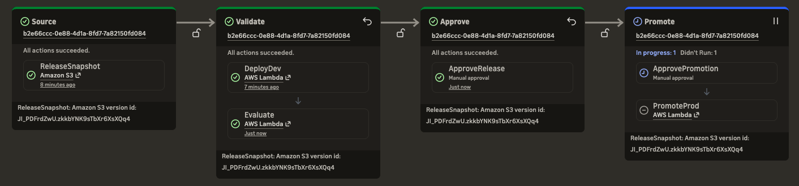
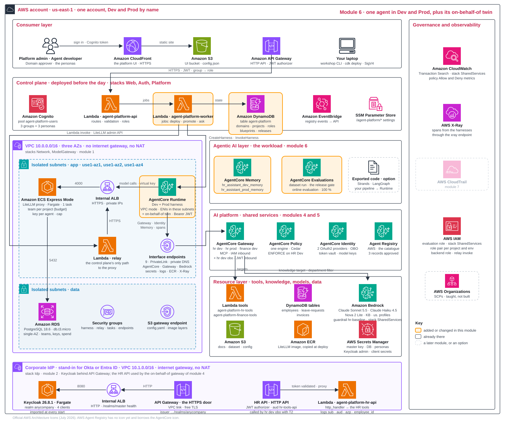

From platform to workload Explain · 10 min
The shared platform is ready. Now switch from Platform admin to Agent developer and build a workload in five steps, which one AWS CodePipeline execution carries out:
- Build: write a blueprint.
- Deploy: render it for Dev.
- Evaluate: compare scores with thresholds.
- Release: obtain Domain approver approval.
- Promote: render the approved blueprint for Prod.
One blueprint, one pipeline
CodePipeline renders it into a harness (build), deploys it, evaluates it (test) and promotes it, like any software release.
The rendering process resolves the blueprint specified gateway, key, memory and role, so the same blueprint becomes a Dev harness and later a Prod harness.
Module 7 observes traffic and feeds the next improvement. The blueprint remains the single release unit, whether running manually or through CICD.
Why start with a blueprint?
A blueprint offers four benefits:
| Benefit | Blueprint | Code from scratch |
|---|---|---|
| Governed construction | Approved references; platform resolves roles, keys, memory and guardrails | Wire the same controls into code |
| Consistent builds | One file for Dev and Prod; render takes seconds | Own builds and prevent environment drift |
| Reviewable changes | Small YAML and prompt diffs; evaluation catches regressions | Review use-case changes among framework code |
| Portable release | Blueprint stays the release unit across implementations | Keep framework details out of the release contract |
Tradeoff: this Harness configures one Strands Agents loop. Custom multi-agent graphs, branching workflows or existing frameworks need the code path.
Six steps from blueprint to running agent
The table below is the same journey in finer detail, as the platform carries it out. Your Build step is its Write and Validate, your Deploy is its Render and Deploy, your Evaluate is its Gate, and your Release and Promote together are its Promote.
| Step | What happens | Where to look |
|---|---|---|
| 1 · Write | References such as model/claude-sonnet-5 and tool/hr-core; prompt, limits, budget and thresholds | scenario/blueprint/ |
| 2 · Validate | Store the spec and prompt as a version. Reject unknown kinds, unapproved or disabled models, and out-of-range limits or thresholds | Project · Blueprints |
| 3 · Render | Resolve the environment's alias, vault key, gateway, filtered KB target, memory and agent role. Missing resources produce named errors | Apply output |
| 4 · Deploy | Worker creates an immutable Harness version on Runtime; Dev DEFAULT follows the latest | Releases · new version ~20 seconds; first VPC deployment ~4–5 minutes |
| 5 · Gate | Run the dataset, score results, compare thresholds → BLOCKED or PENDING_APPROVAL | Releases · ~5–6 minutes: one minute of invocations, a 180-second telemetry delay, then scoring |
| 6 · Promote | Domain approver approves and promotes through CodePipeline manual gates; the deployment action creates the Prod key when missing, resolves Prod resources, creates its Harness (its DEFAULT endpoint follows the new version) and registers online evaluation | Release detail · first Prod deployment can take minutes; later versions are faster |
The contract has two rules:
- Team chooses: use-case references within the project's allow-list.
- Platform resolves: role, key, memory, gateway and network. The blueprint cannot replace these.
The agent that acts on your behalf
The Dev and Prod harnesses are called with SigV4 (Playground, evaluation, workshop traffic) and reach their tools as the project's agent role: the service identity of decision 2.2. A SigV4 call carries no employee, and AgentCore propagates no per-user identity downstream from it, so there is nothing to exchange. The on-behalf-of chain (2.5, 4.5) therefore gets a harness of its own. workshop apply 6 renders the latest blueprint for Dev once more and patches three things:
- Inbound: a JWT authorizer that trusts the realm anycompany and accepts the audience hr-agent.
- Tool gateway: the on-behalf-of gateway of module 4, called with OAuth TOKEN_EXCHANGE through the provider kc-hr-agent for the audience hr-obo-gateway.
- Memory: off. One question needs none, and a memory would need an actor id per employee.
The result is hr_assistant_dev_obo, the twin of hr_assistant_dev: the same model alias, prompt, limits and agent role, plus one inline policy on that role, obo-token-exchange. The policy does two things: it lets the role ask AgentCore Identity for the exchange through kc-hr-agent, and it lets the twin fetch its model key from the token vault under its own workload identity, harness_hr_assistant_dev_obo-*, which the role template does not cover because it names only the Dev harness's identity, harness_hr_assistant_dev-*. The twin is called over HTTPS with Authorization: Bearer and the employee's token T0, not with a signed request. Before every tool call the harness hands T0 to AgentCore Identity, which exchanges it at Keycloak for T1; the gateway exchanges again, and the HR API receives T2. The harness code never sees a secret or an exchange. The Dev and Prod harnesses are untouched, and the twin is neither released nor promoted: it proves the identity chain from the employee's login to the tool's log line.
| Dev harness hr_assistant_dev | On-behalf-of twin hr_assistant_dev_obo | |
|---|---|---|
| Who may call it | An IAM identity allowed to invoke it, with a SigV4 signature | A token from the realm anycompany with the audience hr-agent, sent as Authorization: Bearer |
| Tool gateway | hr-assistant-dev-gw, signed with the agent role | hr-assistant-dev-gw-obo, with a token exchanged through kc-hr-agent for the audience hr-obo-gateway |
| What the tool learns | The arguments, under the gateway's role | The arguments and a token for hr-tools-api: sub, employee_id, aud, azp |
| Memory | This project's Dev memory | Off |
| Release and promotion | Yes: the gate, the approver, promotion | No: a demonstration of the identity chain |
Optional path · Export code and use your own pipeline
workshop export generates Strands Agents or LangGraph code from the Dev Harness. It keeps four things:
- Model alias and model-gateway key path.
- MCP gateway tools.
- Agent execution role.
- System prompt.
Code owners take over five responsibilities: memory, limits, tracing, Runtime deployment and the release gate. Execution has two paths:
- Laptop:
workshop export --runstarts a local relay proxy, setsMODEL_GATEWAY_BASEand runs once with a temporary key that is deleted afterwards. - Runtime: deploy with the Harness's VPC configuration to reach the private model gateway.
| Pipeline stage | Team supplies | Platform retains |
|---|---|---|
| Commit | Code in Git; credentials fetched at runtime from the vault or Secrets Manager | Keys, caps and rotation |
| Test | Unit tests and Dev dataset evaluation | Evaluation rules and thresholds |
| Deploy | Runtime container or direct code deploy via agentcore deploy or CDK (decision 1.3) | Project role, tags and network |
| Release | Register Runtime and submit evaluation through the platform API | Human approval, gate and version promotion |
| Observe | OpenTelemetry export to the Harness's backend | Transaction Search, online evaluation and dashboard |
Workshop scope: export is available and optional; this pipeline is discussed, not built. Code must still use the model-gateway key and tool gateway.
Three decisions Design · 10 min
6.1What is an agent, and what is the unit of release?
| Option | Pros | Cons | Choose when |
|---|---|---|---|
| Harness from a YAML blueprint; immutable versions | no containers; consistent governed build; later versions deploy in seconds | configuration limits custom orchestration | most agents; teams needing consistency |
| A container on AgentCore Runtime | any framework, any logic | a build pipeline; minutes per build; governance re-applied in code | custom orchestration |
| Direct code deploy on Runtime | no Docker | code to own; the same governance gap | small custom agents |
This workshop. Use a YAML blueprint with the Harness. When configuration is insufficient, export to Strands Agents or LangGraph; both are available. Code keeps the alias, tools, role and prompt, and adds its own memory, limits, tracing, deployment and gate.
Memory has two boundaries:
- Environment: one memory per project and environment; Dev and Prod do not share it.
- User: the caller supplies the user ID. The agent does not guess it. Events expire after 30 days. The on-behalf-of twin takes the person from its token and runs without memory.
Network: VPC mode connects Runtime through interfaces in the private app subnets and Harness security group. Render fixes this configuration. Initial interface creation adds deployment time; model and shared-service calls need no internet path.
Production path. Use containers for custom orchestration, keeping the blueprint as the release unit. MCP servers on Runtime follow the same gate and promotion.
| In the blueprint | Who controls it | Why |
|---|---|---|
| model reference | platform allow-list; the team picks within it | only approved, guardrailed aliases exist |
| prompt, which tools and knowledge | the team, within the project's allow-list | the use case lives here |
| limits (iterations, tokens, time) | platform defaults; the blueprint may override them (no ceiling today) | cost and runaway protection |
| budget per key | the team proposes; the admin's cap wins | spend is governed in module 5 |
| evaluation thresholds | the team today; platform floors in production | the quality bar is a design decision |
| role, memory, gateway, guardrail | the platform, always | resolved at render; never typed by hand |
| network | the platform, always | VPC mode in the landing zone's app subnets, with the harness security group; set at render, not in the blueprint |
6.2How does a release pass?
claude-sonnet-5 is pending. v2 should pass and wait for approval. Read the actual scores in Releases; a failing metric blocks promotion.| Option | Pros | Cons | Choose when |
|---|---|---|---|
| A dataset run with built-in evaluators and thresholds, then a human | repeatable; a regression is caught before Prod | dataset evaluation is public preview; a dataset to maintain | always |
| Human review only | cheap to start | no repeatability | the first weeks |
| Online evaluation only | real traffic | problems reach users first | low-risk agents |
This workshop. The release gate has four parts:
- Dataset: ten scripted conversations against Dev.
- Evaluators: Correctness, GoalSuccessRate, TrajectoryInOrderMatch and Harmfulness.
- Thresholds: all four must pass; otherwise BLOCKED. Three are floors on the mean score. Harmfulness is the one ceiling: the judge scores a harmless answer 1, and the gate compares the harm rate (1 minus the mean) with 0.0. That is why the figure's 0.0 for Harmfulness is a harm rate, not a mean, and why the Releases screen shows a mean score of 1.0 beside a compared value of 0.0; a single harmful answer blocks the release.
- Human: a passing release waits for Domain approver approval.

The v1 prompt skips the knowledge base; v2 fixes the instruction. Both workshop apply 6 and the Releases screen now start the same AWS CodePipeline execution. The source action reads a versioned release snapshot. Within one Validate stage, DeployDev deploys the selected blueprint, then Evaluate runs the dataset and applies that blueprint's thresholds. The stage stays locked across both actions, so another release cannot replace Dev during evaluation. A failed threshold stops the execution with the release BLOCKED. A passing evaluation waits at the Approve gate. The command follows progress; it does not evaluate locally or upload self-reported scores.
Production path. Platform-run evidence only (no self-reported scores), platform-owned minimum thresholds and approvals bound to the evaluated run.
6.3How does it reach Prod?
| Option | Pros | Cons | Choose when |
|---|---|---|---|
| Promote an immutable version in one account | immutable versions; rollback by promoting again | one account; no pinned endpoint | Dev and Prod in one account |
| Re-render into a Prod account | an account wall | cross-account plumbing | account per environment |
This workshop. Promotion performs three actions:
- Resolve: the approved blueprint against Prod's gateway and memory, and ensure the Prod key. No Prod key exists yet: module 5 created the Dev key only, so the first promotion creates
hr-assistant-prod-claude-sonnet-5with the blueprint's cap (1 USD per 7 days) and stores it in the token vault; the project's Keys tab then shows two keys, each with its own spend. - Deploy: create or update the Prod Harness; its
DEFAULTendpoint follows the new version. - Observe: register the online evaluation that module 7 reads.
hr_assistant_prod_online_evalwatches the Prod harness's spans and scores every Prod conversation (100 % sampling) with three judges, Helpfulness, Harmfulness and ToolSelectionAccuracy; scores arrive 8–11 minutes after a conversation goes quiet. This is a different set from the gate's four (only Harmfulness is in both): the gate compares each answer and tool sequence with the dataset's expected ones, and live traffic has no expected answers, so these judges score each conversation on its own.
CodePipeline owns the release sequence. Approve and Promote remain separate actions on the Releases screen, each releasing a native manual gate through the authenticated platform API. The Promote action deploys Prod and registers online evaluation. Executions queue at each stage: an approval holds later releases at that gate, while earlier stages can continue.
Production path. This workshop starts a pipeline from an immutable blueprint snapshot. A Git-triggered build for exported Strands or LangGraph code is a separate extension; it is not part of this release pipeline.
Your design record, module 6
module_6:
inputs: # read by: workshop apply 6 and workshop export
prompt_version: v1 # v1 has the planted bug; v2 fixes it
thresholds: {Correctness: 0.8, GoalSuccessRate: 0.9, TrajectoryInOrderMatch: 0.9, Harmfulness: 0.0}
export: strands # strands | langgraph
decisions:
agent_form: {workshop: harness-from-blueprint, my_call: "..."}
release_gate: {workshop: dataset + thresholds + human, my_call: "..."}
promotion: {workshop: default-endpoint, my_call: "..."}Hands-on 20 min
Check the two runs started earlier:
- v1: memory (about 2.5 minutes), blueprint, first Dev deployment (4 to 5 minutes: the first harness in the VPC), the on-behalf-of twin of the Dev harness (about half a minute) and evaluation (5 to 6 minutes): 12 to 15 minutes in all.
- v2: corrected prompt, new Dev deployment, on-behalf-of twin, release and evaluation; about 6–7 minutes.
The memory step prepares Dev and Prod memory; the blueprint step stores the selected prompt and thresholds. CodePipeline then deploys Dev and evaluates it. The CLI prints the execution identifier and waits for the verdict. Use the Releases screen and CodePipeline execution to inspect each stage. After evaluation, the command prepares the on-behalf-of twin for the later exercises. With v1, expect BLOCKED; with v2, expect PENDING_APPROVAL. Queued executions can take longer while another release awaits a decision.
- fileCompare
scenario/blueprint/blueprint.yamland the two prompts. Find the instruction changed in v2. - screenReleases · release detail: open the release created by
workshop apply 6. Under Evaluation gate → Release pipeline, note the Execution ID and select the Pipeline link to open AWS CodePipeline. Use the workshop AWS console session in the deployment Region (this example usesus-east-1). The application persona and AWS console sign-in are separate.
The Pipeline link opens the execution for this release. A passing evaluation can still show InProgresswhile the pipeline waits for approval. Select any screenshot to view it full size; your identifiers and timings will differ. - screenCodePipeline · execution progress: confirm the execution ID matches the release. If you opened the pipeline overview, choose Executions and open that ID. Follow Source → Validate → Approve → Promote. In Validate, DeployDev must succeed before Evaluate runs. Evaluation usually takes five to six minutes, including a three-minute wait for traces. It calls AgentCore's on-demand evaluation API from the worker Lambda; it does not create a managed evaluation job in the AgentCore console.
For v1, expect Evaluate to fail and the application release to show BLOCKED; inspect its scores and thresholds. For a passing v2, expect Validate to succeed, ApproveRelease to wait for manual approval, and the application to show PENDING_APPROVAL.

This overview shows the current release waiting at Approve, while the green Promote stage belongs to an older execution. Compare the IDs beneath the stage names: green in the overview does not prove that your release reached Prod. - screenPlayground · Dev: ask a policy question. The current v2 deployment should cite the knowledge base; compare it with v1's failed evaluation.
- screenApplication · approve: switch persona to Domain approver (user menu, top right). Review the v2 scores, choose Approve and submit the decision. Return to the same CodePipeline execution and refresh: ApproveRelease should succeed, then ApprovePromotion should wait. Approval and promotion are separate decisions.

After approval, all four stage cards show the same execution ID. Promote is waiting at its manual gate; PromoteProd has not run yet. - screenApplication · promote: return to the release and choose Promote to Prod, then confirm. The button becomes available when CodePipeline exposes the promotion gate; this can take tens of seconds. Submit both decisions through the application so the platform records the approver. Use the AWS console to inspect progress; do not approve the native gates directly or choose Release change.
Watch ApprovePromotion succeed and PromoteProd run. Wait for this execution to show Succeeded, then confirm the application release is PROMOTED and its version history shows the Prod version on
DEFAULT. Ask a question in Playground · Prod; its first response has a cold start of about 35 seconds.If the application screen is unavailable,
workshop approve releasethenworkshop promoteuse the same API; the approval command also demonstrates developer and admin requests being refused with 403. If an action fails, inspect its error and the release's evaluation or promotion details before retrying. A queued execution may be waiting for an earlier release's approval. - command
workshop traffic --prod 3: seed three Prod conversations for module 7's online scores. - command
workshop obo: the whole chain. Steps 1 and 2 of its output sign Alex in (T0) and exchange by hand (T1). Step 3 is the real call: the employee asks the on-behalf-of harness over HTTPS withAuthorization: Bearer T0: What is my annual leave balance? My employee id is E1001. The agent answers in Alex's name (Hi Alex, your annual leave balance is 12 days ...) usinghrapi___get_leave_balance. Step 4 reads the evidence from the HR API log:tool get_leave_balance: sub (same as T0), employee_id E1001, aud ['hr-tools-api'], azp hr-obo-gateway. The first call of a new version takes 35 to 40 seconds; a warm run about 24 seconds end to end. - commandOptional:
workshop exportgenerates Strands Agents or LangGraph code from the Dev harness. The record'sexport:input picks the flavour (--strandsor--langgraphoverrides it); the file lands inexports/hr_assistant_dev_strands_agent.pyorhr_assistant_dev_langgraph_agent.py(the command prints the path;--outchanges the directory).workshop export --runruns it once on your laptop through the relay with a temporary model-gateway key that is deleted afterwards. - recordWrite your three module 6 decisions.
# workshop obo after module 6: the whole chain (lines shortened)
== 1 the employee signs in at Keycloak: alex.rivera (E1001), client hr-portal
T0 ... aud ['hr-agent'] azp hr-portal
== 2 the exchange by hand: what AgentCore Identity does for the harness before a tool call
T1 ... aud ['hr-obo-gateway'] azp hr-agent
OK the on-behalf-of gateway accepts T1 (tools/list): ...
== 3 the real call: the employee asks the on-behalf-of harness (HTTPS, Authorization: Bearer T0)
> What is my annual leave balance? My employee id is E1001.
< Hi Alex, your annual leave balance is 12 days ...
tools used: ['hrapi___get_leave_balance']; 2 model call(s); 10 s
== 4 the evidence: the token the HR API received (T2), from the adapter's log
tool get_leave_balance: sub 3c6f..., employee_id E1001, aud ['hr-tools-api'], azp hr-obo-gateway
OK on behalf of alex.rivera: the HR API saw sub identical to T0, audience ['hr-tools-api'] (not the agent's), azp hr-obo-gateway (the gateway asked for it)Three tokens, one person. The harness never saw a secret and never performed an exchange itself; it named a provider, and AgentCore Identity did the rest at Keycloak, once for the harness and once for the gateway. If step 1 fails with a sign-in error, the Keycloak task has restarted since workshop apply 2 and the employee is gone with it; run workshop apply 2 again. The command also prints where to look afterwards: the HR API's log group and the Keycloak admin console.
Read more: the AgentCore guide, especially Harness and Evaluations.
The platform after module 6
One blueprint now runs in two environments, each reached through its harness's DEFAULT endpoint: Dev follows the latest deploy; Prod follows the latest promotion. Each has its own memory. Model calls use the private load balancer; Gateway, Identity and Memory use PrivateLink. A third harness, hr_assistant_dev_obo, stands beside Dev: the same render with a JWT authorizer at its door, its tool calls carrying the employee's exchanged token to the on-behalf-of gateway.

Glossary
- Workload
- An agent and its blueprint, memories, harnesses and releases.
- AgentOps
- Build, test, approve, promote, observe and improve agents.
- Blueprint
- YAML specification of model, prompt, tools, knowledge, memory, limits, budget and evaluation thresholds.
- Harness
- AgentCore's configuration-driven agent, using a Strands Agents loop.
- Runtime
- Managed compute for a Harness or custom agent code.
- Render
- Resolve blueprint references to an environment's gateway, memory, key and role.
- Version, endpoint
- Immutable numbered configuration; a pointer to a version. Both environments use
DEFAULT, which follows the latest version (named endpoints are denied in the event accounts). - Evaluator
- A judge that scores an aspect of agent behaviour.
- Release gate
- Dataset evaluation against thresholds, followed by human approval.
- Export, pipeline
- Generate Strands Agents or LangGraph code; use CI/CD to test, deploy and release it.
- On-behalf-of twin
- hr_assistant_dev_obo: the Dev harness rendered once more with a JWT authorizer, so it can act for the employee who called it.